Examples#
These examples are meant to give an overview of how skrf can be used. Each page can be followed along in a browser, or downloaded as an ipython notebook
Network Theory
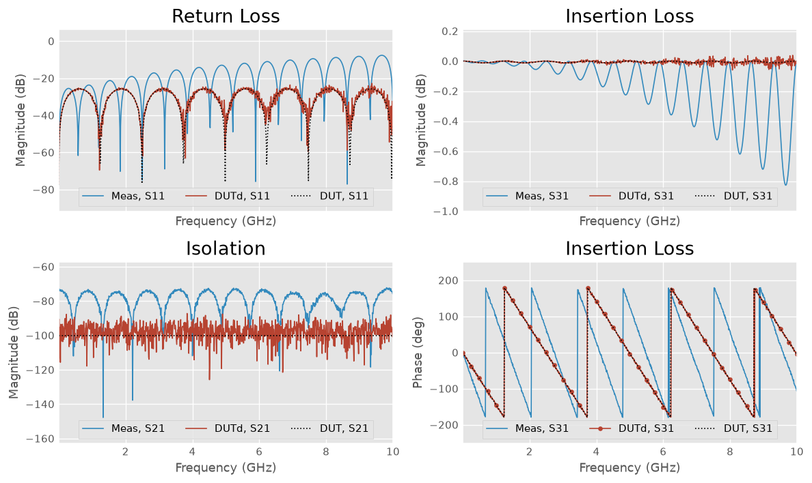
Balanced Network De-embedding
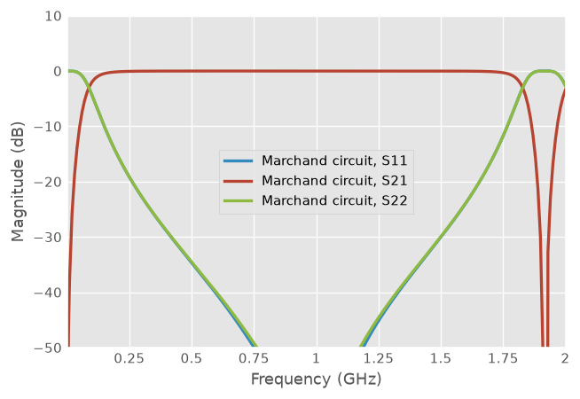
Balun & Transformer Designs
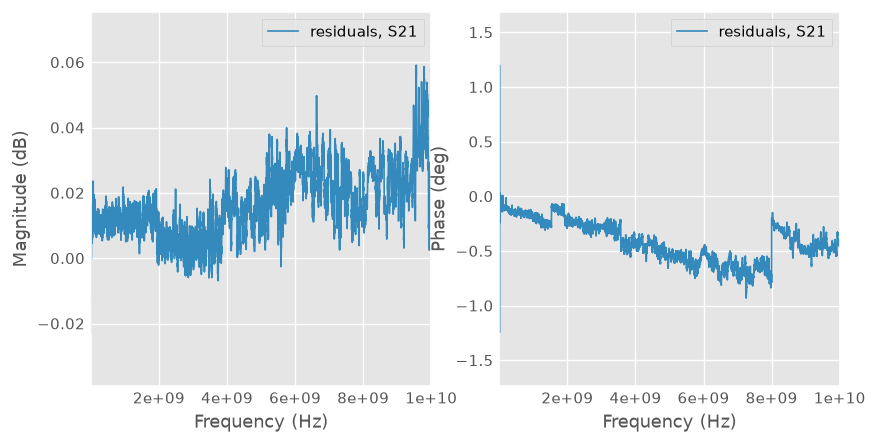
CPW media example
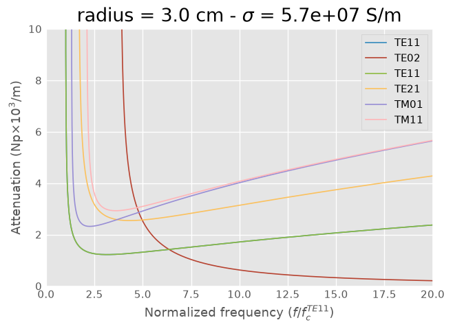
Circular waveguide attenuation
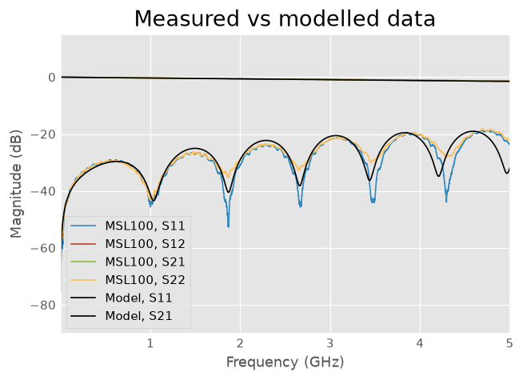
Correlating microstripline model to measurement
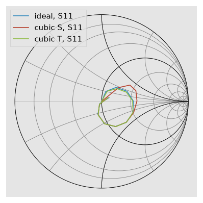
DC Extrapolation for Time Domain

DefinedAEpTandZ0 media example

IEEEP370 Deembedding

LNA Example
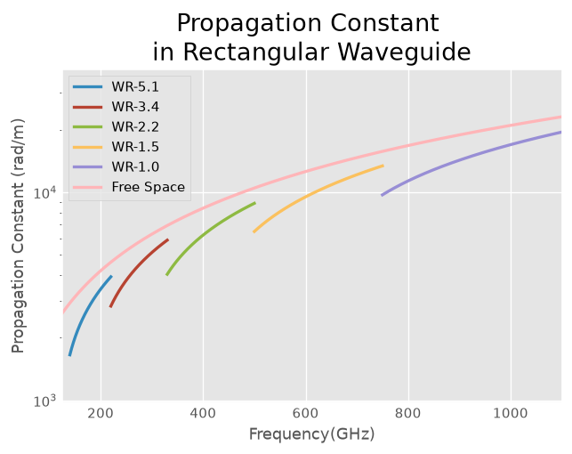
Properties of Rectangular Waveguide

Renormalizing S-parameters

Time Domain and Gating
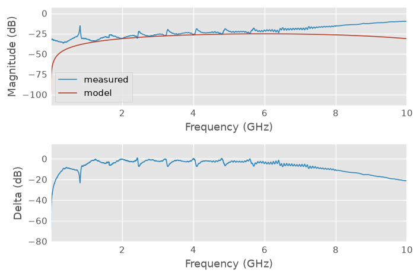
Time domain reflectometry, measurement vs simulation
Transmission Line Losses on a Loaded Lossy Line
Modeling Transmission Line Properties
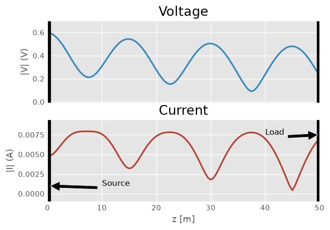
How does the SWR vary along a line?

Working with Complex Characteristic Impedance
Matching

Metrology and Calibration
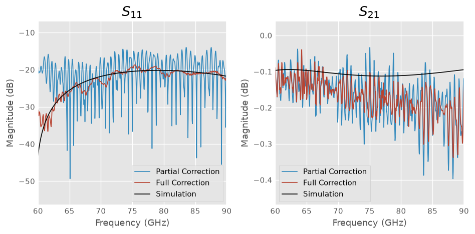
Calibration With Three Receivers
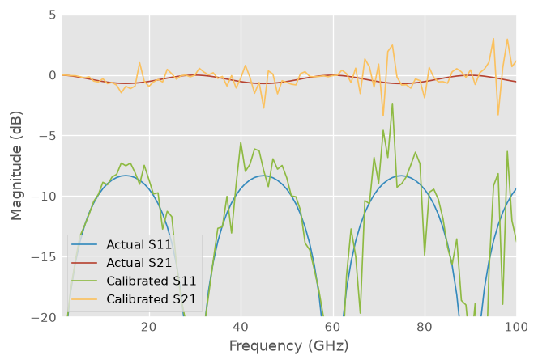
LRRM
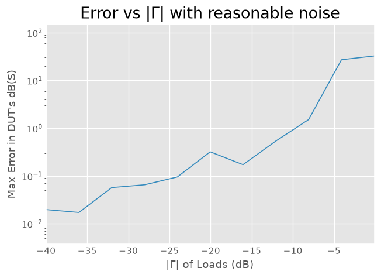
Measuring a Multiport Device with a 2-Port Network Analyzer
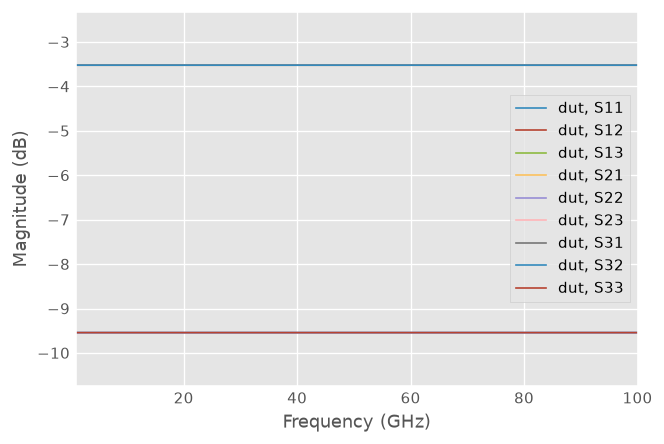
Multi-port calibration
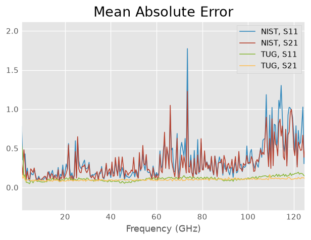
Multiline TRL

Measuring a 4-Port With The 1.5-Port NanoVNA V2
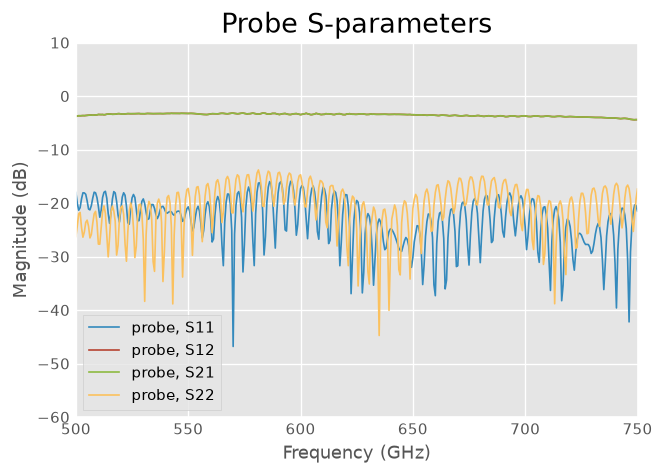
One Port Tiered Calibration
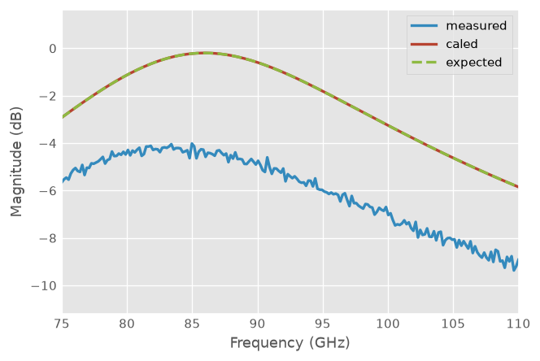
SOLT

SOLT Calibration Standards Creation
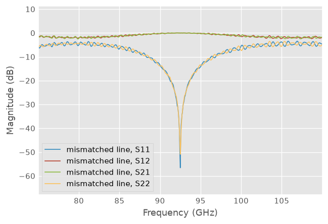
TRL
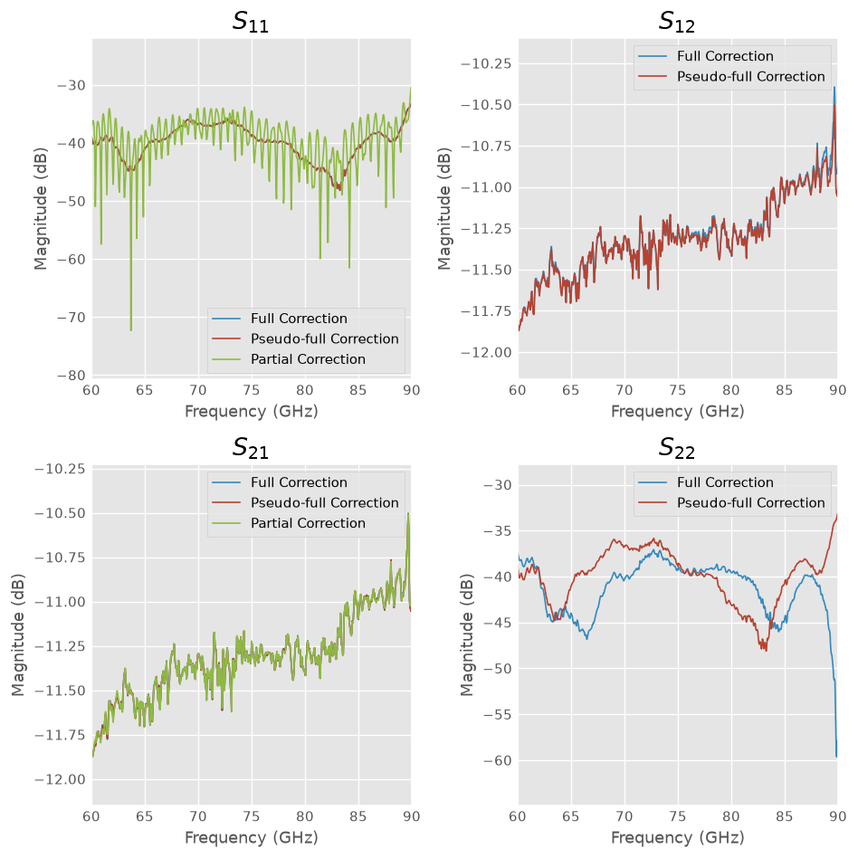
TwoPortOnePath, EnhancedResponse, and FakeFlip